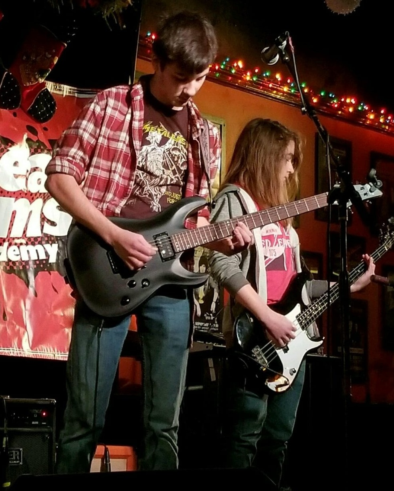
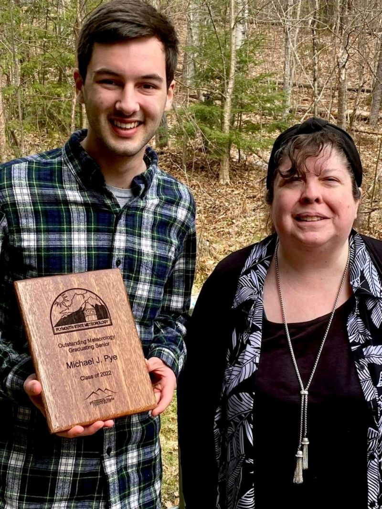
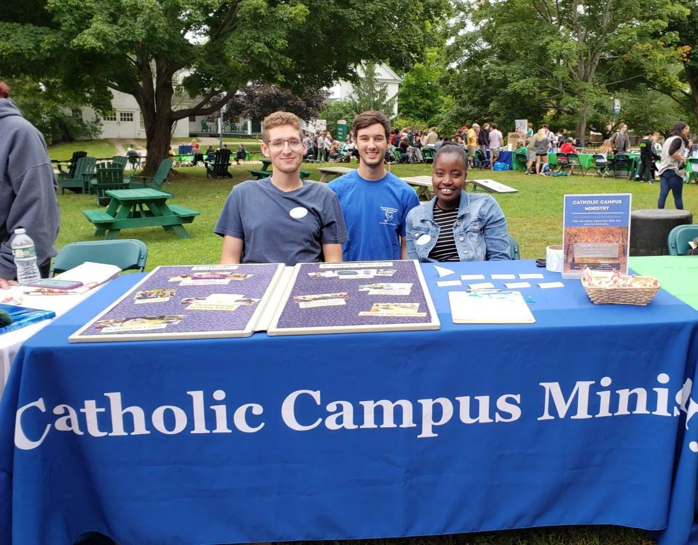
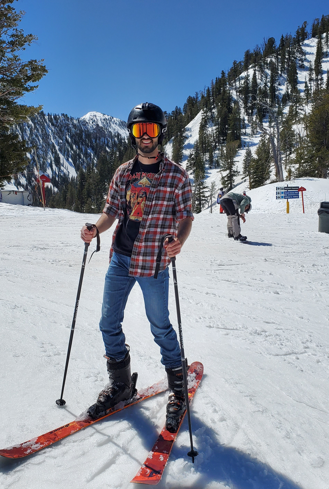

About Me¶
Bio¶
Early Life¶
I was born in Boston, Massachusetts during July of 2000 and grew up in the nearby suburb of Burlington. Since I was a child, I have been fascinated by physical science, data, and the natural world. As a result, I excelled in science and math throughout my education.
Soon after I started high school, I became very passionate about music, prompting me to learn to play the guitar. I quickly became involved in writing my own songs with friends, recording them, and performing them live. By the end of my senior year I was a part of three separate bands and had recorded an album.
 Me playing guitar on stage in Somerville, Massachusetts with my band, “Reapercussion” in December 2017.
In June 2018, it was time for me to graduate from Burlington High School. During my time there, I proved myself to be a capable and successful student, accumulating a 3.74 GPA.
College¶
In August 2018, I moved to Plymouth, New Hampshire so I could pursue a B.S. in meteorology at Plymouth State University.
Academic Success¶
At Plymouth State, I reached new academic heights! At the time of graduation in May 2022, I achieved a 3.91 GPA, never receiving less than an A in any of the courses offered by the Meteorology Department. Because my GPA was the highest in my graduating class of meteorology students, I was awarded the class of 2022 “Outstanding Meteorology Graduating Senior” award by the Meteorology Program. In addition to a bachelor’s degree in Meteorology, I also obtained a minor in Technical Mathematics. Out of my own interests, I took additional courses covering GIS as well as political science, getting more than halfway to both a GIS certificate and a political science minor.
 The Plymouth State Meteorology Program chair, Dr. Lourdes Aviles (right), presents me (left) with the 2022 Outstanding Meteorology Graduating Senior Award in April 2022.
Tutoring¶
Tutoring played another major role during my time at Plymouth State University and was one of the most rewarding experiences in my college career. Throughout all four years, I regularly assisted my classmates with coursework, particularly in calculus, physics, programming, and meteorology courses. I felt it was important to be a team player, and make sure my friends succeeded with me.
Due to my academic successes, my freshman year calculus professor recommended that I become a math tutor at the school’s Math Activity Center. I worked at the Center during the fall of my sophomore year, assisting students that arrived looking for help with algebra, pre-calculus, and calculus. However, I was unable to fit professional tutoring into my schedule the following semester and I did not return to the Math Activity Center.
At the start of my senior year, the Atmospheric Dynamics course did not have a listed tutor. The professor recommended that I be the tutor for the class which I accepted. This began a year of tutoring at Plymouth State’s Office of Academic Support Services (the Math Activity Center merged with this office during the 2020-2021 school year) where I tutored physics students and some calculus students. Although I never formally tutored Atmospheric Dynamics, I assisted my classmates with the class as we learned the material together.
Website Development¶
One of my greatest personal discoveries during college was my passion for computer programming. I began writing Python code in December of 2019 and quickly became hooked. A year later I attempted to build my first website using Python’s Flask library and writing my own HTML. The website was built to support a summer forecasting challenge my friends and I developed to keep our forecasting skills sharp over the summer months.
Although the website was never launched, the experience I gained led me to volunteer to develop some web pages for the Plymouth State Weather Center website between the end of my junior year of college and the beginning of graduate school. For more information on my work done for the Plymouth State Weather Center, click here.
School Clubs¶
When I started at Plymouth State, I quickly became involved in clubs on campus. During my first month, I began participating in both the University’s chapter of the American Meteorological Society (AMS) as well as Catholic Campus Ministry (CCM). I remained a part of these groups all four years I attended Plymouth State.
I took on additional responsibility as a member of the executive board of CCM for my sophomore, junior, and senior years. In this role, I handled the group’s external communication and planned meetings and events. During my senior year, I was elected outreach coordinator for the school’s AMS chapter. Like with CCM, I handled the group’s external communications and helped make planning decisions for the group.
 Me (center) and my fellow CCM executive board members, Ryan Kudish (left) and Maria Mutesi (right), tabling at the fall 2021 semester Plymouth State activities fair.
Graduate School¶
In August of 2022, I moved to Salt Lake City, Utah to pursue a master’s degree in Atmospheric Science at the University of Utah. I began my work as a research assistant, studying under Dr. Zhaoxia Pu, during June of 2022. My work focused on drought in the western United States during 2021 and 2022. For more details on my work at the University of Utah, click here.
I saw continued academic success during graduate school. Over the course of two years, I took six classes in addition to performing research, accumulating a 3.90 GPA by the time of graduation.
On the weekends, I did my best to take advantage of my proximity to the Wasatch Mountains. When there was snow on the ground, I was skiing, and when there wasn’t, I was hiking.
 Me skiing at Solitude Mountain on a warm April day in 2023.
North Carolina¶
After completing my thesis in August 2024, I moved to Raleigh, North Carolina to be with my now fiancée while she pursues a Ph.D. in Atmospheric Science at NC State University.
Career Development¶
I continued to work with Dr. Zhaoxia Pu remotely as a research associate until November. In this position, I added additional analysis to work I had done for my thesis and revised previously written scientific manuscripts to be submitted for publication.
As my work with the University of Utah was coming to a close, I secured a position at the U.S. Environmental Protection Agency (EPA) contracted through Oak Ridge Associated Universities working as an air quality researcher and data scientist. I started in December 2024 working for Dr. Havala Pye. For details about my work at the EPA, click here. Unfortunately, due to employment restructuring at the EPA, my contract was not renewed. As a result, I was laid off in May 2025 and am currently searching for a new place to apply my data analysis and scientific programming skills.
Activities¶
Since moving to North Carolina, I have continued partaking in outdoor activities. My fiancée and I make regular day trips to explore North Carolina’s state parks. We frequently play tennis and pickleball and have taken up disc golf. I have also learned how to play golf over the past summer and have become passionate about the sport. Although skiing has become harder to come by since moving to Raleigh, I was still able to incorporate it into my schedule during winter 2025 and I hope to be able to continue that through future winters.
In addition to outdoor activities, I continued playing guitar and writing music. After reconnecting with an old friend from South Carolina we collaborated on a new song that has been released on Spotify. I also love playing board games with friends and have begun to participate in bar trivia on a semi-regular basis.
Hobbies¶
Skiing
Hiking
Playing guitar
Writing music
Golfing
Disc golf
Tennis
Board games
Programming
Debating
Trivia
Personal Interests¶
Music
Weather
Physics
Mathematics
Civil engineering
Transportation
Car mechanics
History
Economics
Politics
Government